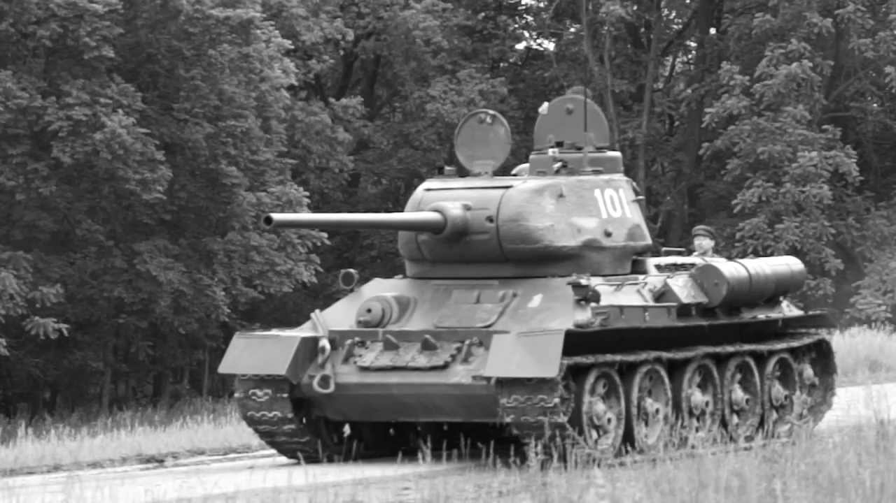

The T-34 was a Soviet medium tank introduced in 1940, designed by the Kharkiv Morozov Machine Design Bureau. It revolutionized tank warfare with its combination of mobility, firepower, and armor, setting a new standard for tank design worldwide. The T-34 played a decisive role in World War II and became the backbone of the Red Army’s armored forces. The T-34 combined simplicity and effectiveness — it was easy to produce, repair, and operate even in harsh Soviet conditions. More than 57,000 were built during WWII, making it one of the most produced tanks ever. It was a key factor in turning the tide against Nazi Germany from 1942 onward. After the war, the T-34 served in over 40 countries and remained in combat use for decades.

- Characteristics:
- Type: Medium tank
- Weight: 32 tons
- Crew: 4
- Armament: 76.2mm F-34 gun/ 85mm ZiS-53/ 85mm D-5T; 2 x 7.62mm DT machine guns
- Speed: 53 km/h